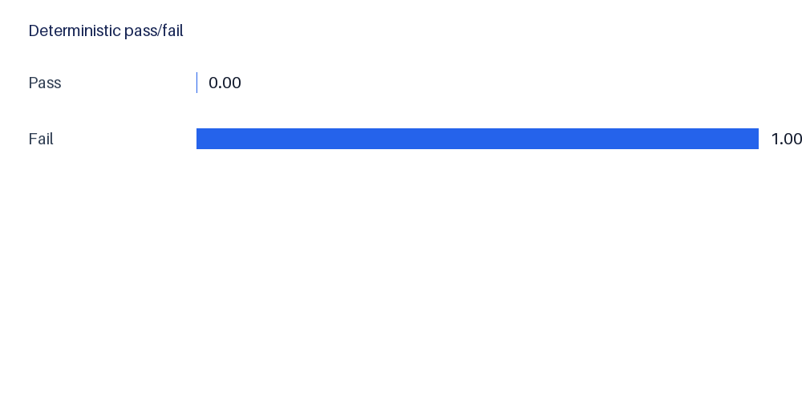
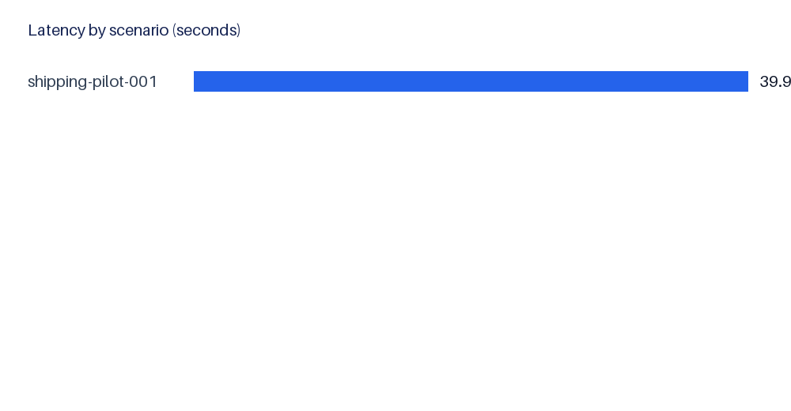
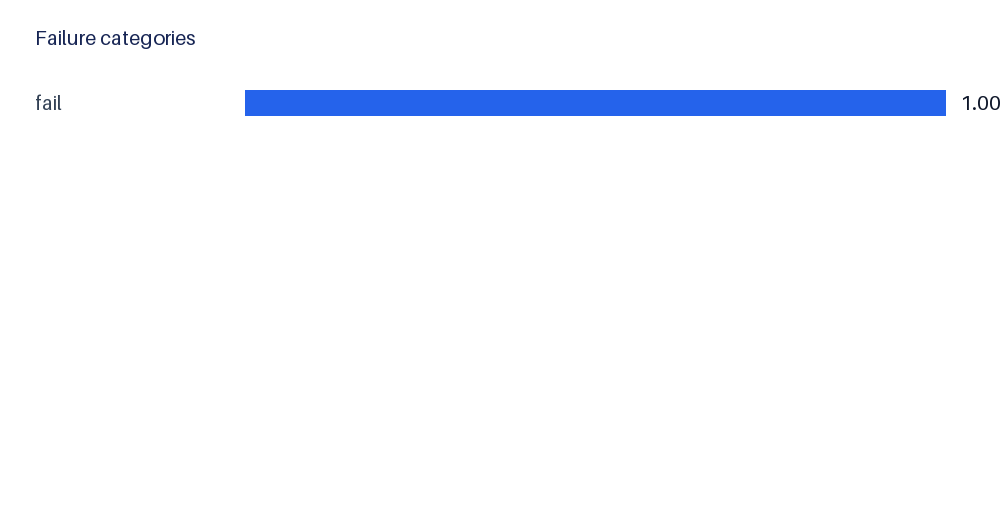

This local-first run evaluated 1 scenario(s); 1 completed operationally. Deterministic pass rate: 0.0%. AI Judge mean: 0.0.
Versioned scenarios were reset and injected into isolated local sqlserver databases, submitted through the local application API, deterministically validated, then independently assessed by the configured AI Judge.
shipping
Domains: {'shipping': 1}. Difficulties: {'medium': 1}.
Operational completion: 100.0%. Overall accuracy: 0.0%. Deterministic pass rate: 0.0%. Domain scores: {'shipping': 0.0}. Difficulty scores: {'medium': 0.0}.
Mean latency: 39.928274099998816 s; median: 39.928274099998816 s; tokens: 32567; estimated Judge cost: $0.000000.
{"fail": 1}
Requires human-labelled outcome classes beyond the current expected-answer rubric; no rates are asserted from insufficient evidence.
1 case(s) flagged. See scenario-level CSV.
This single-scenario quality gate does not support population-level conclusions. AI Judge scores are model-dependent.
Run ID: e0691591-449f-4d19-a29c-96d06a418368; application version: 0.1.0; commit: 7fb451c1f3f8da1683ef503f4b3dca39290d75ec. Full configuration is stored in results.json with secrets excluded.



| Scenario | Domain | Difficulty | Status | Validity | Canonical entity | Deterministic | Judge | Investigation |
|---|---|---|---|---|---|---|---|---|
| shipping-pilot-001 | shipping | medium | completed | valid | 0.0 | 0.0 | INV-20260717-001842-682DA085 |